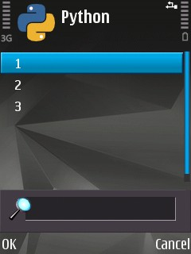
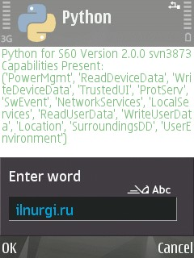
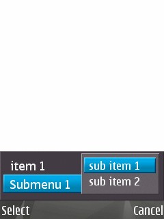
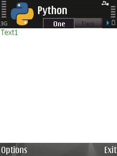

appuifw¶
Стандартный модуль для создания графичекого интерфейса программы.
Диалоговые окна¶
- appuifw.multy_selection_list(list[, style='checkbox', search_field=1])¶
Parameters: - list (list) – список элементов окна
- style – тип отображения (cheskbox, checkmark)
- search_field – отображать ли поле для поиска
Создает окно со списком для множественного выбора. Возвращает индекс выбранной строки.
>>> appuifw.selection_list([u'1',u'2',u'3'])
- appuifw.multi_query(label1, label2)¶
Parameters: - label1 (unicode) – заголовок первого поля ввода
- label2 (unicode) – заголовок второго поля ввода
Создает окно с запросом ввода двух данных. Возвращает две строки
>>> appuifw.multi_query(u'Enter 1', u'Enter 2')

- appuifw.note(title[, type[, global])¶
Parameters: - title (unicode) – заголовок уведомления
- type –
тип уведомления
- info - информационное
- error - ошибка
- conf - просто окно, выполнено
- time - время
- cod - пароль, ввод закрывается звездочками
- query - окно с запросом, без ввода, ответ на который да или нет.
- global – 0|1 отображать поверх всех окон
Создает окно с уведомлением
>>> appuifw.note(u'Привет','info')

Parameters: - list (list) – список для выбора
- title (unicode) – заголовок окна
Создает всплывающее окно со списком для выбора. Возвращает индекс выбранной строки.
>>> appuifw.popup_menu([u'1',u'2',u'3'],u'Select')

- appuifw.query(title, type[, default])¶
Parameters: - title (unicode) – заголовк запроса
- type –
тип ввода данных, соответственно возвращаемый тип.
- text - строка
- number - числа
- float - вещественное число
- date - дата
- time - время
- cod - пароль, ввод закрывается звездочками
- query - окно с запросом, без ввода, ответ на который да или нет.
- default – стандартное значение, выводимое при запросе
Создает окно с запросом ввода данных
>>> appuifw.query(u'Введите текст','text')
- appuifw.selection_list(list[, search_field])¶
Parameters: - list (list) – список для выбора
- search_field – 0|1 строка поиска
Создает окно со списком для выбора. Возвращает индекс выбранной строки.
>>> appuifw.selection_list([u'1',u'2',u'3'], 1)
- appuifw.available_fonts()¶
Возвращает список, установленных шрифтов
>>> appuifw.available_fonts() [u'Alpi12', u'Albi12', u'Alp13', u'Alpi13', u'Albi13', ... u'Series 60 ZDigi']
- appuifw.touch_enabled()¶
Возвращает True если устройство сенсорное, иначе возвращает False.
app¶
- class appuifw.app¶
Объект, который не нужно создавать, так как это уже произошло при загрузке модуля - просто используем его возможности.
- class app.body¶
Отвечает за рабочую область приложения (его «тело»). Может быть присвоен один из трех объектов: Text, Canvas, Listbox
appuifw.app.body=t=appuifw.Text()
- clear()¶
Очищает экран.
>>> appuifw.app.body.clear()
- app.exit_key_handler¶
Обработчик кнопки выхода
>>> def my_exit(): pass >>> appuifw.app.exit_key_handler = my_exit
- app.focus¶
Обработчик выхода приложения в и из фокуса
>>> def callback(focus): if focus==0: print u'приложение свернуто' elif focus==1: print u'приложение активно' >>> appuifw.app.focus = callback
- app.directional_pad¶
Включение отображения экранной клавиатуры
Список для создания меню (вызывается при нажатии на левую софт-клавишу).
>>> appuifw.app.menu = [(caption1, callback1),(caption2,((caption3,callback3),(caption4, callback4)))]
- app.orientation¶
Ориентация экрана.
- avtomatic - автоматический режим
- portrait - вертикальный режим
- landscape - горизонтальный режим
>>> appuifw.app.orientation = 'avtomatic'
- app.screen¶
Размер видимой части экрана приложения.
- normal - обычное отображение
- large - без антенного бара
- full - без антенного бара и без софт кнопок.
>>> appuifw.app.screen = 'normal'
- app.title¶
Заголовок приложения
appuifw.app.title = ‘моя программа’
- app.track_allocations¶
Что то связанное с утечкой памяти
- app.activate_tab(index)¶
Делает активным вклдку с номером index
- app.full_name()¶
Возвращает полный путь к программе
>>> appuifw.app.full_name() u'c:\\system\\apps\\Python\\Python.app'
- app.set_tabs(tabs[, callback])¶
Parameters: - tabs (list) – Список заголовков вкладок
- calback – функция, которая выполянется при перемещении между вкладками, в которую передается индекс активной вкладки.
Создает окно с вкладками
>>> app1 = appuifw.Text(u'Text1') >>> app2 = appuifw.Text(u'Text2') >>> def callback(index): if index == 0: appuifw.app.body = app1 elif index == 1: appuifw.app.body = app2
>>> appuifw.app.set_tabs([u"One", u"Two"], callback)
- app.activate_tab(index)
Активирует указанную вкладку
>>> appuifw.app.activate_tab(2)
- app.set_exit()¶
Выход из программы
>>> appuifw.app.set_exit()
- app.uid()¶
Возвращает строку, uid программы
>>> appuifw.app.uid() u'10209876456'
- app.layout(id)¶
Метод возвращает информацию о размере (первый кортеж) и положение (второй кортеж) элементов интерфейса: экрана, различных панелей и т.д. Координаты отсчитываются с левого верхнего угла. Нужная информация выводится в зависимости от переменной id:
- appuifw.EScreen - размер экрана
- appuifw.EApplicationWindow - часть экрана, доступная для приложений
- appuifw.EStatusPane - часть экрана, где находятся общие элементы для приложений - иконка, название, вкладки и т.д.
- appuifw.EMainPane - часть экрана, где располагается главная панель приложений (рабочая область).
- appuifw.EControlPane - часть экрана, где находится контрольная панель приложений (надписи над левой и правой софт-клавишами).
- appuifw.ESignalPane - часть экрана, где располагается индикатор уровня сети.
- appuifw.EBatteryPane - часть экрана, где находится индикатор уровня заряда батареи.
- appuifw.EContextPane - часть экрана, где находится иконка приложения.
- appuifw.ETitlePane - часть экрана, где располагается название приложения.
- appuifw.ENaviPane - часть экрана, где расположена навигационная панель (вкладки в Настройках, например).
- appuifw.EFindPane - часть экрана, где находится панель поиска (в нижней части Контактов, например).
- appuifw.EWallpaperPane - часть экрана, где расположены обои (на рабочем столе).
- appuifw.EIndicatorPane - часть экрана, где располагаются индикаторы наличия входящих SMS, включенного Bluetooth, подключенного кабеля, активированного будильника и т.д.
- appuifw.EAColumn - часть экрана, которая используется для отображения мелких рисунков и флажков (например, иконки файлов и папок в Диспетчере файлов).
- appuifw.EBColumn - часть экрана, которая используется для отображения списков строк (например, имена файлов и папок в Диспетчере файлов).
- appuifw.ECColumn - часть экрана, которая используется для отображения данных, вводимые пользователем. Пересекается с EDColumn.
- appuifw.EDColumn - часть экрана, которая используется для отображения дополнительных иконок. Пересекается с ECColumn.
- appuifw.EStaconTop - верхняя левая часть панели контроля и статуса при ландшафтной ориентации экрана (только для Symbian 9).
- appuifw.EStaconBottom - нижняя правая часть панели контроля и статуса при ландшафтной ориентации экрана (только для Symbian 9).
- appuifw.EControlPaneTop - верхняя левая часть панели контроля при ландшафтной ориентации экрана:
- appuifw.EControlPaneBottom - нижняя правая часть панели контроля при ландшафтной ориентации экрана (только для Symbian 9).
- appuifw.EStatusPaneTop - верхняя левая часть панели статуса при ландшафтной ориентации экрана.
- appuifw.EStatusPaneBottom - нижняя часть панели статуса при ландшафтной ориентации экрана (только для Symbian 9).
- appuifw.EUniversalIndicatorPane - часть экрана, где располагаются индикаторы наличия входящих SMS, включенного Bluetooth, подключенного кабеля, активированного будильника и т.д. (только для Symbian 9).
>>> appuifw.app.layout(appuifw.EScreen) ((176, 208), (0, 0))
Canvas()¶
- class appuifw.Canvas([redraw_callback = None, event_callback = None, resize_callback = None])¶
Данный объект представляет из себя «холст» который можно вывести на экран.
Parameters: - redraw_callback – функция, которая будет вызываться при обновлении экрана (после свертыванияразвертывания программы, после выбора из меню Функции нужного пункта и т.д.). При вызове ей передается кортеж из 4 чисел - координаты левого-верхнего и правого-нижнего угла обновляемой области;
- event_callback –
функция, которая будет вызываться при нажатии на клавиши клавиатуры.
При вызове ей передается словарь из 4 элементов (для сенсорных экранов 3):
- ‘type’ - тип нажатия. Для определения используются переменные модуля key_codes:
- ‘keycode’ - код клавиши;
- ‘scancode’ - скан-код клавиши;
- ‘modifiers’ - модификатор нажатия (обычное, удерживание и т.д.)
Для сенсорных экранов:
- ‘type’ - тип нажатия. Для определения используются переменные модуля key_codes:
- key_codes.EButton1Up(нажатие на экран) == 297;
- key_codes.EButton1Down(отпускание экрана) == 303;
- key_codes.EDrag(перемещение по экрану) == 299.
- ‘pos’ - кортеж координат;
- ‘modifiers’ - модификатор нажатия (обычное, удерживание и т.д.)
- resize_callback – функция, которая будет вызываться при изменении размера видимой области экрана (например, при изменении переменной appuifw.app.screen). В качестве аргумента этой функции передается кортеж из 2 чисел - новая длина и высота.
После создания, все, что мы сделаем с Canvas, немедленно отобразится на экране. А какие методы у него есть? Это все функции для работы с изображением из модуля graphics.
>>> canvas = appuifw.Canvas() >>> appuifw.app.body = canvas
- Canvas.size¶
Размер
- Canvas.begin_redraw([(x1, y1, x2, y2)]), end_redraw()¶
Включает автоматическую прорисвоку UI сервера.
- Canvas.end_redraw()¶
Выключает автоматическую прорисвоку UI сервера.
- Canvas.bind(pointer_event, callable[, ((x1, y1), (x2, y2))])¶
Parameters: - pointer_event – нажимаемая клавиша
- callable – функция обработчик
- y1), (x2, y2)) (((x1,) – координаты области, в которой выполняется нажатие
Привязывавыет нажатия клавиш/экрана на канвасе.
- Canvas.blit(img[, target])¶
Parameters: - img – отображаемое изображение
- target – смещение
Отображает на канвасе изображение
>>> canvas.blit(img, target=(10,100))
- class appuifw.Content_hadler¶
Content_hadler()¶
Объект для открытия файлов различных типов.
>>> new_name = appuifw.Content_handler()
- Content_hadler.open(filename)¶
Открывает файл, причем в зависимости от его типа запускается соответствующее приложение (например, картинки открываются через просмотрщик изображений).
>>> content = appuifw.Content_handler() >>> content.open(u'c:\\others\\image\\my_image.jpg')
- Content_hadler.open_standalone(filename)¶
Аналогичен предыдущей функции, но приложение запускается отдельно и независимо от программы Python.
>>> content = appuifw.Content_handler() >>> content.open_standalone(u'c:\\others\\image\\my_image.jpg')
Form()¶
Данный объект предсавляет диалоговое окно, элементы которого можно редактировать по своему усмотрению.
- class appuifw.Form(fields[, flags])¶
Parameters: - fields –
список кортежей каждый из которых отвечает за один элемент формы [(label, type [, value]),......]
- label - название элемента строки
- type - тип поля элемента
- text - текст
- number - целое число
- float - вещественное число
- date - дата
- time - время
- combo - список
- value - значение элемента по умолчанию
- flags –
настраивает вид элементов формы:
- appuifw.FFormViewModeOnly - устанавливает, что поля элементов формы доступны только для просмотра (их редактирование не допускается).
- appuifw.FFormEditModeOnly - устанавливает, что поля элементов формы доступны и для редактирования.
- appuifw.FFormAutoLabelEdit - разрешает возможность редактирования не только полей элементов, но и их названий.
- appuifw.FFormAutoFormEdit - разрешает динамически изменять содержимое формы (т.е. удалять и добавлять элементы прямо по ходу работы).
- appuifw.FFormDoubleSpaced - указывает представить элементы в двухстрочном виде: на первой строке расположено имя, на втором - поле.
- fields –
- Меню формы которому необходимо присвоить список, состоящий из кортежей. Каждый кортеж отвечает за один пункт меню. [(title, callback),..]
- title - имя пункта
- callback - имя функции, вызываемой сразу после нажатия на пункт.
Меню должно быть только одноуровневым (т.е. никаких вложений). Кроме того, в случае когда установлен флаг FFormEditModeOnly (редактирования полей) появится пункт меню «Изменить».
- From.save_hook¶
Этому атрибуту присваивается имя функции, которой передается единственный аргумент - содержимое формы. Задача save_hook - проверить верность введенных данных и вернуть логическое значение: True, если новое содержимое принимается как дозволенное, False - данные неприемлемы.
- Form.execute()¶
Активирует форму
>>> form.execute()
- Form.lenght()¶
Возвращает количество элементов формы
- Form.insert(index, field)¶
Вставляет новый элемент field после элемента с индексом index
- Form.pop()¶
Возвращает значение последнего элемента и сразу же удаляет.
Icon()¶
- class appuifw.Icon¶
Объект для работы с изображениями *.mbm
>>> icon = appuifw.Icon(u"z:\\resource\\apps\\avkon2.mbm", 28, 29)
InfoPopup()¶
Информационное окно
- class appuifw.InfoPopup¶
- InfoPopup.show(text[, (x, y), time_shown, time_before, alignment])¶
Parameters: - text (unicode) – сообщение
- y) ((x,) – координаты окна
- time_shown – время отображения в миллисекундах
- time_before – время до отображения в миллисекундах
- alignment –
выравнивание текста в окне
- appuifw.EHLeftVTop - горизонталь - левый, вертикаль - верх
- appuifw.EHLeftVCenter - горизонталь - левый, вертикаль - центр
- appuifw.EHLeftVBottom - горизонталь - левый, вертикаль - низ
- appuifw.EHCenterVTop - горизонталь - центр, вертикаль - верх
- appuifw.EHCenterVCenter - горизонталь - центр, вертикаль - центр
- appuifw.EHCenterVBottom - горизонталь - центр, вертикаль - низ
- appuifw.EHRightVTop - горизонталь - правый, вертикаль - верх
- appuifw.EHRightVCenter - горизонталь - правй, вертикаль - центр
- appuifw.EHRightVBottom - горизонталь - правый, верх - низ
Создает информационное окно:
>>> import appuifw >>> popup = appuifw.InfoPopup() >>> popup.show(u'www.ilnurgi.ru\ndjango,python, pys60', (100,100),2000,2000)

- InfoPopup.hide()¶
Скрывает информационное окно.
Listbox()¶
- class appuifw.Listbox(list, callback)¶
Parameters: - list – список элементов списка
- callback – функция обработчик
Данный объект модуля создает поле со списком строк. Для создания двухуровневого списка необходимо передать список кортежей
import appuifw def callback(): pass listbox = appuifw.Listbox([u'Part1', u'Part2', u'Part3'], callback) appuifw.app.body = listbox
- Listbox.bind(event_code, callback)¶
Привязывает запуск функции callback к нажатию на клавишу с кодом event_code
- Listbox.current()¶
Возвращает номер активной строки (т.е. та, которая выделена на данный момент).
- Listbox.set_list(list[, current])¶
Устанавливает новый список list с уже активной строкой current (если отсутствует, то активна первая строка).
- Listbox.position¶
Координаты (тупл) верхнего левого угла листбокса
- Listbox.size¶
Возвращает размер листбокса
Text()¶
- class appuifw.Text¶
Данный объект модуля создает текстовое тело программы.
>>> t = appuifw.Text()
- Text.color¶
Определяет цвет текста
>>> t.color (0, 128, 0)
- Text.focus¶
Определяет, будет ли виден курсор. По умолчанию - True (т.е. виден мигающий курсор). Если ему присвоить значение False, то он перестанет быть видимым. На проведение операции (ввод, копирование) это никак не влияет.
>>> t.focus = False
- Text.font¶
Кортеж, который определяет: шрифт, размер шрифта, сглаживание (16-выкл/32-вкл) выводимого текста:
>>> t.font (u'Nokia Hindi S60', 15, 16)
- Text.highlight_color¶
Определяет цвет выделения.
>>> t.hightlight_color = red
- Text.style¶
Определяет цвет выводимого текста:
- appuifw.STYLE_BOLD - текст получается жирным.
- appuifw.STYLE_UNDERLINE - текст получается подчеркнутым
- appuifw.STYLE_ITALIC - текст получается курсивом.
- appuifw.STYLE_STRIKETHROUGH - текст получается перечеркнутый линией.
- appuifw.HIGHLIGHT_STANDARD - текст получается выделенным.
- appuifw.HIGHLIGHT_ROUNDED - текст получается с округленным выделением.
- appuifw.HIGHLIGHT_SHADOW - текст получается с тенью.
>>> t.style = STYLE_BOLD
- Text.add(text)¶
Добавляет text в текстовое поле.
>>> t.add(u'привет')
- Text.bind(event_code, callback)¶
Привязывает к нажатию клавиши с кодом event_code вызов функции по имени callback.
- Text.clear()¶
Очищает текстовое поле.
>>> t.clear()
- Text.delete([pos = 0, length=len()])¶
>>> Удаляет участок текста от позиции курсора pos и длиной lenght
>>> t.delete(10,20)
- Text.get([pos = 0, length=len()])¶
Возвращает участок текста от позиции курсора pos и длиной lenght
>>> t.get(10,20)
- Text.get_pos()¶
Возвращает текущую позицию курсора.
>>> t.get_pos() 20
- Text.len()¶
Возвращает число, длину всего текста.
>>> t.len() 123
- Text.set(text)¶
Очишает поле и устанавливает его как text
>>> t.set(u'ilnurgi')
- Text.set_pos(pos)¶
Устанавливает курсор в позицию pos в текстовом поле.
>>> t.set_pos(5)